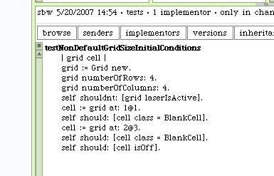
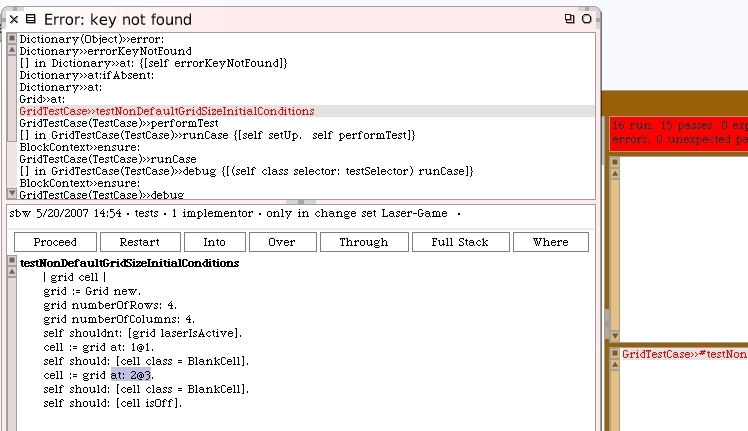
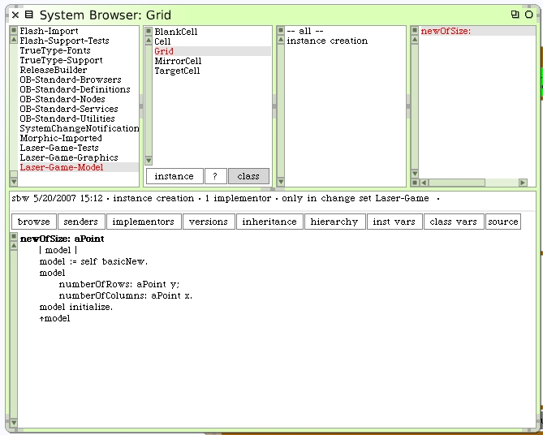
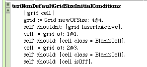
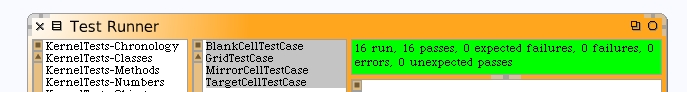

Let's enrich the Grid unit test. We'll specify a column and row size and re-test the basics.
When we run the test we get another failure.
After inspecting the "grid" object, it looks like the "cells" instance variable is the wrong size, defaulted to 1@1. When our test case attempts to access the cell at 2@3 it fails.
The issue here is that the #new class method causes the #initialize instance method to run as part of the object instantiation. This means the cells dictionary is populated using the defaulted state for number of columns and rows. By the time the number of columns and rows are set, it's too late. What we need is a smarter instantiation method on the Grid class. Close the Debugger.
This technique uses #basicNew to instantiate the model. #basicNew creates an instance of the class just like #new, however unlike #new, it does not automatically run the #initialize instance method on the newly created object. We then use the argument passed to #newOfSize: to declare the number of rows and columns on the model before we manually initialize it.
Important note! In the browser above we just created a new Class method. Not an Instance method. Make sure you have the "class" button clicked before creating the #newOfSize: method. A number of students learning from this tutorial have made this mistake. If you do too, just delete the instance method you created by mistake and create a new class method instead.
Modify the test case to use our new class method.
Rerun of the tests should pass now.
